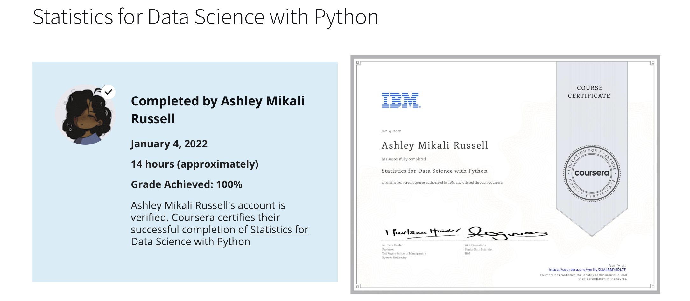

Maybe I, Too, Am a Member of the Crustacean Cult
R is Easier than Python? Huh?
I did oral exams disguised with a mustache and a hat mock job interviews in my Statistical Machine Learning class this past semester. I listed both Python and R (along with relevant libraries and packages) on my resume, and one question I had NOT considered before came up towards the start of my first interview.
I’m paraphrasing here, but the gist is: “I see that you have both Python and R on your resume… which do you prefer, and why?”
I think I deserve a silver medal in bullshitting. I’m a modest person, so I can acknowledge that my performance wasn’t worthy of a gold medal.
But anyways, I was only half bullshitting with my answer. And even then, I wasn’t really bullshitting. I did answer to the best of my abilities. But man, did it feel like I was bullshitting my teacher (if you’re reading this, I’m sorry).
I gave the only answer I could conceive of: “Because R feels easier to me.”
I walked right into a trap with that one. Notice I didn’t say better (which would have given me so much ammo for bullshitting), rather, I said easier. My teacher hit me back with the “but why?” And, I mean, I can’t blame him for that. He made valid points: Python is a beginner-friendly language, and most people consider it to be more straightforward and intuitive. Naturally, most students in my class would likely say scikit-learn > tidymodels (I promise this is NOT an “I’m not like other programmers!” article).
Oh, did I mention that I haven’t written anything computational-statistics-wise with Python in years? My last (and first, and only) experience in this domain was with a Statistics for Data Science with Python MOOC I took on Coursera in… 2022 (late 2021, really), along with some tinkering with scikit-learn I did shortly thereafter.
Now, now, you just have to believe me on that one. I promise I’m not exercising my bullshitting skills again right now. I have proof!

Anyways! With that out of the way, let’s establish a few things:
I have some experience with using Python for statistical work.
My initial introduction to computational statistics was in late 2021 (I had barely just turned 18! Time flies!).
Python was not my introduction to coding or computer science as a whole (more on this in a minute).
I have more experience with R (multiple semesters, multiple months) for this type of work than I do with Python (a few weeks at best like 3 years ago).
I was being honest about finding R to be easier for me. What I didn’t know and somewhat bullshitted on the spot was why that was the case.
The entire point of this article (that will only be read by future me lol) is to revisit that last point and figure out why. I’m pretty curious about it. I pretty much just fumbled around to my teacher, saying, “I don’t know, it just feels easier to me,” in different ways with no actual substance. Well, let’s find that substance now!
My Programming Background
My earliest serious experience with programming was when I was around 15 years old, when I learned… Pascal. (I’ll edit this in the future after I manage to find receipts from… so many years ago.)
So, excluding HTML, Swift, and SQL, my experience went something like this:
Pascal, then
C, then
Python
One of these is so very obviously not like the others, right? Right????? Everyone, point your finger at the one language that isn’t as explicit and structured as the others.
I used Pascal and C in high school. I didn’t touch Python until I did the MOOC I mentioned earlier, and didn’t really get into it until I started college.
And man, did I struggle with Python when I just started. I had the programming fundamentals locked down to some extent (at least for the Introduction to Computer Science class), but going from something as explicit as C to something like Python was a bit challenging.
My teacher said that I was making my code needlessly complex and that I was using “C brain”.
How It All Comes Together
I’ve adapted somewhat to Python now, but I think the reason I find R to be easier is because of my “C brain”, that is, because I got my start using more structured and explicit languages, and R gives me that kind of space.
Hear me out: Yes, R is a high-level, dynamic, and interpreted language. Not too different from Python, I guess. But R encourages more structure and explicitness than Python does; the latter is designed to be more intuitive by using natural language and a lot of magic behind the scenes.
I feel more confident using tidymodels than scikit-learn. Boil that down to familiarity in structure, I suppose.
Enter the Crab Cult
Now, you might be wondering, “How on Earth is the title relevant?” And that, dear future me reader, is a valid question.
For the last few months, I’ve been fascinated by Rust. And I, unsurprisingly, now want to rewrite everything in Rust. I’ll let the following image explain this for me:
BUT WHY?????????
Because Rust has more in common with C than Python (in my uneducated opinion, which could very well be wrong). AND IT LOOKS FUN!!!!
This:
{Rust}
struct AboutMe {
pronouns: String,
majors: Vec<String>,
specialization: String,
languages: Vec<String>,
hobbies: Vec<String>,
}
fn main() {
let ash = AboutMe {
pronouns: String::from("She/her"),
majors: vec![
String::from("Computer Science-Mathematics"),
String::from("Philosophy")
],
specialization: String::from("Data Science"),
languages: vec![
String::from("Python"),
String::from("Rust"),
String::from("SQL"),
String::from("R"),
String::from("C"),
],
hobbies: vec![
String::from("Music Curation"),
String::from("Video Games"),
String::from("Reading"),
],
};
}is longer, sure, but so much more explicit than this:
{Python}
class AboutMe:
def __init__(self):
self.name = "ash"
self.pronouns = "She/her"
self.majors = ["Computer Science-Mathematics", "Philosophy"]
self.specialization = "Data Science"
self.languages = ["Python", "Rust", "SQL", "R", "C"]
self.hobbies = ["Music Curation", "Video Games", "Reading"]Will you catch me trying to use Rust or R with SQL any time soon? Of course not, I’m trying to decompress this summer, not give myself extra stress (which means I will likely do this at 3 am on a random Tuesday morning when I feel unhinged). I can admit that the Python + SQL combo is pretty good, though, in my experience.
Alas, if you’re still wondering how crabs or cults relate to any of this, it’s because:
- Some say that Rust has a cult following;
- Rust’s mascot is a crab (which I think is better than Python’s mascot, so can I give it bonus points for that?).
Anyways, let’s close this ramble with a classic: the crab rave! Good times. I felt so giddy and nostalgic watching this for the first time in years 😭.
Alright, I’m signing off for real now. I have wise crabs to consult.
· · ─ ·𖥸· ─ · ·